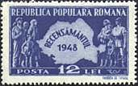

In the year 1868 a new
currency was introduced on stamps, that replaced the older one, from Turk,
Parale.
The name of this
currency, one that survived till today, is LEU.
Singular: 1 leu (means one lion :)
Plural: 2 or more lei
The Leu was subdivided into 100 Bani, something that
never changed since 1868.
Singular: 1 Ban
Plural: 2 or more Bani (bani means also money)
1 leu = 100 bani
On the stamps, the name of leu (lei) can appear either fully,
or abbreviated as L. The abbreviation for ban (bani) is
b.
When Lei appears before the numeric value, it is correct to
write: LEI 1, Lei 2.
It is also correct 1 + 1 LEI for surcharged stamps.
On the stamps issued 1894 and later there are also values
written as 1 BANI 1. This can be considered correct, because BANI 1 is (even
is 1 BANI isn't, correct being 1 Ban).
Examples (text)
Examples (stamps)
Example for bani
Example of abbreviation b, B
(for bani)
Example for 1 Leu
Example for LEI

Typical example for Lei and
subdivisions (1.75)
Example for the abbreviation L (for
Lei)
Example for 1 + 1 LEI
The apparently strange, but correct LEI 1.
Notes
For information about monetary reforms and inflation, as reflected by
Romanian stamps, please visit the pages found under the menu point:
Country, Postal History
Romanian's neighbor Bulgaria, located on the South border, uses
a currency with a similar name and the same significance. It was
introduced on stamps in 1881 and is named Leva (lion). 1 Leva = 100
Stotinki. Tne name of stotinki comes from Sto, with the meaning 100 in
Slavic languages. The first Bulgarian stamps show a stylized lion.